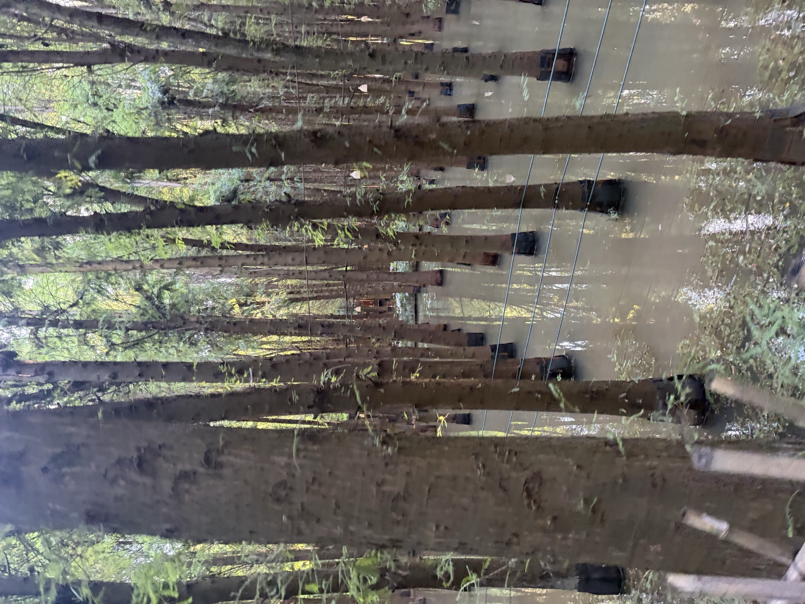
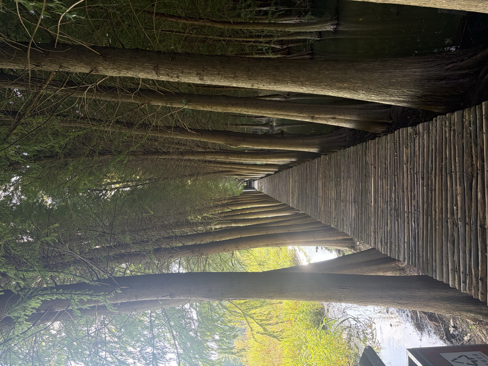
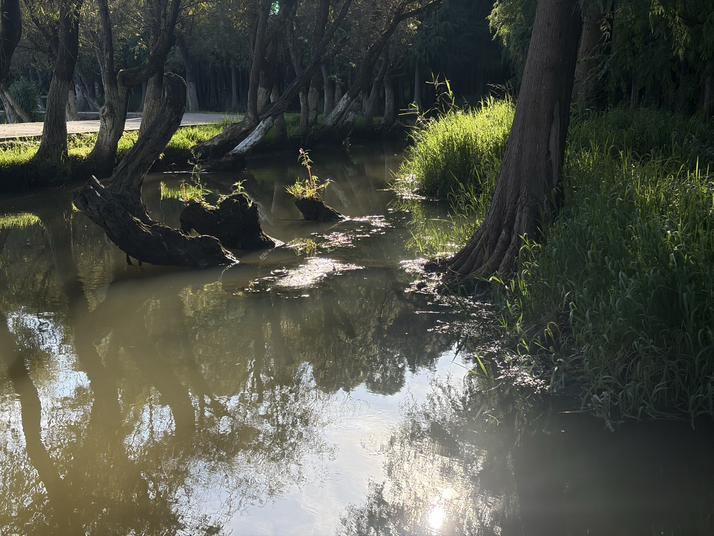

捞渔河湿地是滇池东岸的一处湖滨湿地。我们的现场观察从“水、植物、鸟、人”四个角度展开，再用公开资料验证能够验证的趋势。
FIELD OBSERVATIONS · 现场观察点
点击任意观察点 · 查看照片与现场记录
[现场观察]
木栈道：人进入自然，但不完全占据自然
栈道让人可以进入、观察和休闲，同时把人的活动范围引导在相对明确的空间中。生态保护不是简单地“把人赶走”，而是寻找人与生态系统之间的合理距离。

贯穿湿地的木栈道 · 引导而非阻挡

水面与树木倒影
[方法意识]
看到，不等于已经证明
现场照片是第一手观察证据；区域性生态变化则需要公开统计、监测资料或专业研究来验证。把两者分开，是这次实践最重要的记录原则之一。
CONTINUE TO02 / VILLAGE · 海晏村
→